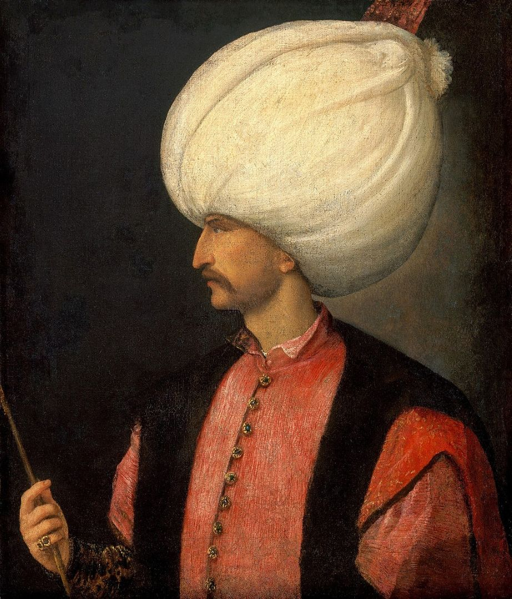

Gallery
Suleiman

Suleiman I, known as "The Lawgiver". Under his reign, the Ottoman Empire reached its greatest territorial extent—stretching from Vienna to Baghdad.
Suleiman I, known as "The Lawgiver". Under his reign, the Ottoman Empire reached its greatest territorial extent—stretching from Vienna to Baghdad.